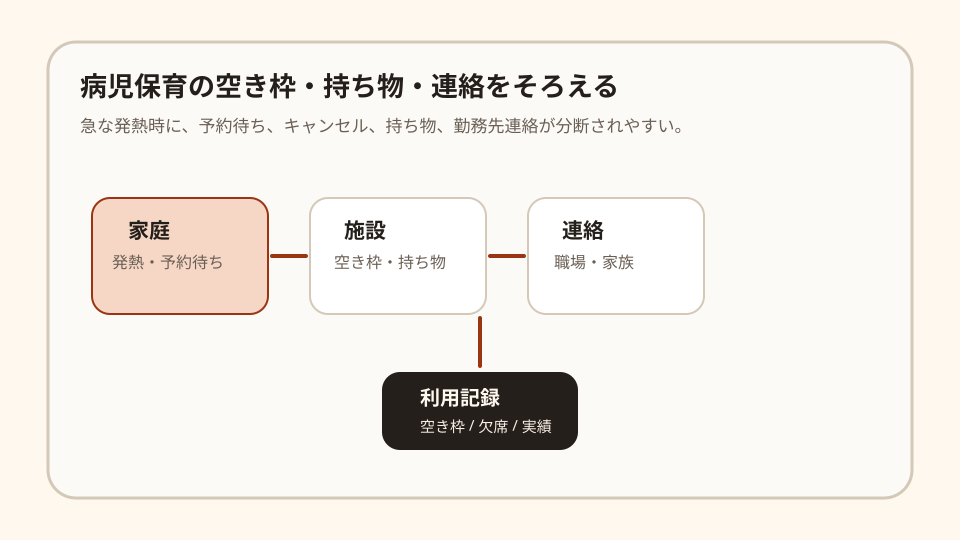

Question Note
病児保育のキャンセル枠と持ち物連絡のずれを埋める小規模サービス案

全体像
病児保育は、こどもの急な発熱や体調不良時に家庭と仕事の両立を支える仕組みです。現場の負荷は施設数だけではなく、朝のキャンセル、空き枠待ち、持ち物確認、勤務先への連絡、利用実績の記録が短時間に重なることにもあります。
狙いは、保育制度全体を作ることではなく、小規模な病児保育施設や自治体委託先の空き枠・キャンセル・連絡テンプレートの運用に絞ることです。
どの社会問題を切り出すか
| 現場課題 | 何が起きるか | 既存手段の限界 |
|---|---|---|
| 朝のキャンセルが直前 | 空きが出ても、次の家庭に連絡する時間が足りない。 | 電話順番待ちは確実だが、候補者と条件の照合に時間がかかる。 |
| 持ち物と受け入れ条件が家庭ごとに違う | 診断書、薬、着替え、食事可否などの確認漏れが起きる。 | 施設ごとの紙案内はあるが、当日の状態と結びつきにくい。 |
| 家族・勤務先連絡が別作業 | 利用可否が決まるまで、家族の分担や勤務調整が止まる。 | 一般予約ツールは、家庭内の分担や職場向け連絡文には弱い。 |
サービス案
病児保育施設向けに、キャンセル枠、待機家庭、必要書類、持ち物、連絡文をまとめる「病児保育枠ミニ台帳」を提供します。
- キャンセル発生時に、待機家庭を年齢、症状区分、利用希望時間で並べる。
- 施設ごとの持ち物、薬、食事、書類チェックを当日用リストにする。
- 家族向け、勤務先向けの短い連絡文を自動生成する。
- 利用、キャンセル、辞退理由を月次で集計する。
- 個人情報を必要最小限にし、医療判断には踏み込まない。
100万円規模に抑えた市場設定
初年度は2市程度の病児保育施設、子育て支援事業者、自治体委託先60拠点を到達可能市場とし、16拠点に導入する前提にします。
| 項目 | 仮定 | 結果 |
|---|---|---|
| 到達可能拠点数 | 60拠点 | 自治体・支援事業者経由で接点を持てる範囲 |
| 初年度導入 | 16拠点 | 小規模施設を中心に導入 |
| 月額利用料 | 5,000円/拠点 | 960,000円/年 |
| 導入支援 | 10,000円 x 6拠点 | 60,000円 |
| 初年度売上予想 | 合計 | 1,020,000円 |
収益モデル
- 基本: 施設または委託事業者ごとの月額利用料
- 追加: 施設別チェックリスト作成、初期設定代行
- 追加: 自治体・子育て支援団体向け説明会
利用者課金ではなく、初期は施設側の朝の連絡負荷を減らす固定課金の方が読みやすいです。
必要なシステム要件と支出
| 領域 | 要件・使い道 | 年額の目安 |
|---|---|---|
| フロント | スマホでキャンセル、待機、持ち物確認を操作できる画面 | 0円〜 |
| バックエンド | 施設、家庭、待機、キャンセル、実績、権限の管理 | 42,000円 |
| 通知 | メール中心、必要時だけSMS | 24,000円 |
| 帳票・記録 | 利用実績CSV、月次PDF、簡易監査ログ | 18,000円 |
| 運用・専門確認 | ドメイン、バックアップ、個人情報・医療情報境界の確認 | 86,000円 |
| 年間支出 | 合計 | 170,000円 |
AIを使った開発見積もり
AIを使うと、待機リスト、チェックリスト、連絡文テンプレート、実績CSVの初期実装を短縮できます。ただし、医療判断に見える表現を避けること、個人情報の範囲、施設ごとの受け入れ条件は人が確認します。
| 作業 | AIで短縮できること | 目安 |
|---|---|---|
| 要件整理 | 施設ヒアリングから朝の業務フローを整理 | 3〜5日 |
| プロトタイプ | 待機一覧、キャンセル登録、持ち物チェックを作る | 1〜2週間 |
| 本実装 | 通知、権限、CSV、テンプレート生成を補助 | 2〜3週間 |
| 検証・修正 | 架空ケースで連絡漏れと誤表示を洗う | 1週間 |
売上・支出・利益
売上 - 支出 = 利益
| 項目 | 金額 | 補足 |
|---|---|---|
| 売上 | 1,020,000円 | 月額5,000円 x 16拠点 x 12か月 + 導入支援60,000円 |
| 支出 | 170,000円 | システム、通知、帳票、専門確認、説明資料 |
| 利益 | 850,000円 | 施設ごとの初期設定作業は別途 |
必要人数と人材要件
この規模では、実行者1名 + 単発外注を前提にします。
- 実行者: Webアプリを作れ、子育て支援施設と業務整理ができる人
- 補助外注: 個人情報、医療情報に見える表現、利用規約の確認
- 望ましいスキル: CRUD実装、予約UI、通知設計、帳票設計、子育て支援業務への理解
リスクと最初の検証
- 施設側が朝の忙しい時間に入力できるか。
- 医療判断や優先順位判断に見えない設計になっているか。
- 保護者への通知が期待値を上げすぎないか。
最初は2施設で1か月だけ試し、キャンセル枠の再利用件数、電話回数、持ち物確認漏れが減るかを見ます。
結論
このテーマは、保育枠そのものを増やすのではなく、病児保育のキャンセル待ちと当日連絡のずれを整える方向に切ると、100万円規模でも成立しやすいです。